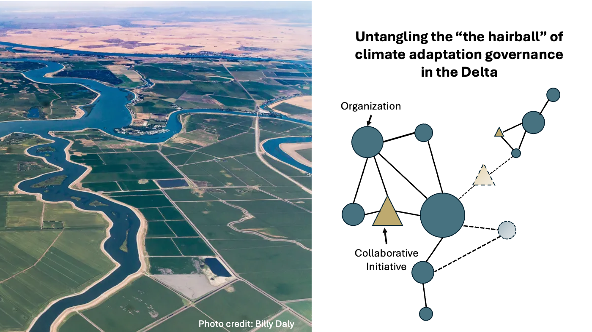
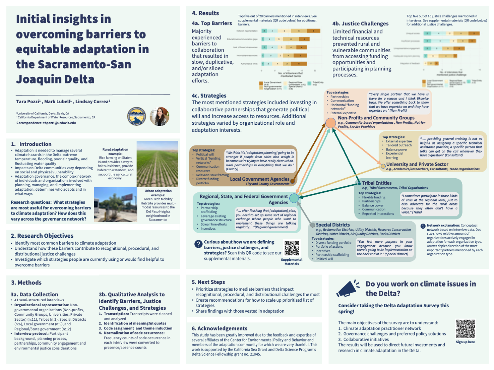

Collaborative governance of climate adaptation in the Sacramento - San Joaquin Delta
Project Team
Tara Pozzi1, Dr. Mark Lubell1, Lindsay Correa2
1Center for Environmental Policy and Behavior, UC Davis, CA
2California Department of Water Resources, Sacramento, CA
Project Overview
Check out the project website for the summary report and interactive data explorer!

The Delta region faces numerous challenges, including flooding, extreme heat, and poor air and water quality. Addressing these issues requires collaboration among a complex network of government agencies, non-governmental organizations, communities, and Tribes.
To better understand and improve the governance of this complex system, we are mapping the network of organizations and collaborative initiatives involved in planning and implementing adaptation strategies. By creating this baseline understanding, we can identify how the network is functioning and where it may be falling short.
Our research methodology involves:
Conducting interviews with a subset of adaptation practitioners to gain in-depth knowledge of key governance players and needs
Distributing an online survey to the broader Delta adaptation community to understand policy preferences and collaborative experiences
This data will provide a comprehensive synthesis of the adaptation governance landscape. Some of the anticipated benefits of this research include:
Practitioners will be able to visualize their position within the network, potentially discover new collaborators, and understand how to participate more strategically
Government agencies will gain insights into the most effective engagement strategies and learn how to target investments to benefit rural and marginalized communities
Understanding the governance landscape is a key step in learning how to leverage partnerships for positive social and environmental change and investing in more effective climate adaptation strategies.
Main Research Questions
Who is involved in climate adaptation and what are they doing?
What are the top governance challenges and preferred adaptation strategies?
What is the structure of the adaptation governance network and how well is it functioning? How does this vary across urban and rural land use contexts?
Research Products
2024 State of the Estuary Poster

Upcoming Research Products
Report based on interview and survey findings about governance challenges/successes for adaptation planning, major collaborative forums, and recommendations to support partnered adaptation efforts
Video presentation of main interview and survey findings
More information: